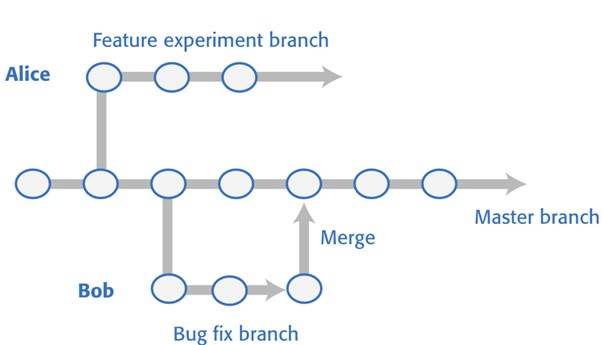

In the last lab we looked at the basics of using GitHub as an individual, including getting familiar with GitHub desktop and the importance of source control, how to create and make and track changes to your own repositories and how to access and make changes to already existing repositories.
In order to effectively complete this lab, you need to ensure that you have completed the first in this series. If you haven’t done so it can be found here:
This lab will focus on the collaborative working aspect of GitHub, and in order to complete it effectively you will need to work in your assignment groups.
When multiple people are working on a project waiting for someone to finish their section so it can be passed on to another is impractical and would lead to long delays. But without waiting for someone to finish their section when you reupload the project then every time someone pushes a commit it will remove your changes and revert the codebase back to an earlier version, so how do you get around this?
GitHub (and Git in general) does this by using a branching and merging system.
A branching and merging system allows you to make a perfect copy of an original repo to a “branch” which can then be worked on and edited. When changes are pushed to this branch it does not affect or make any changes to the original repository. Meaning that if anything goes wrong the original repository is safe in its initial working state.
This system is not only beneficial when working as a team but also individually, using branches is a good practice to get into especially when you are aiming to add large new features to a project that could make a difference to how it works or potentially cause issues.
When a branch has been completed and tested it can then be added back into the original repository to become part of the program again, this is called a “merge”.
When completing a merge in GitHub you first create something called a pull request, this tells the other members of your team (or yourself!) that you have completed your section of code and wish for it to be checked over and then added into the original branch.
The branch is then checked over to ensure that there isn’t any code that will affect the currently existing program (especially if other branches have been made since you created yours, as you will have a code base that represents the pull request when you made it) and if the code will still work as intended you can then accept the merge request and allow it to be added to the original repo’s branch (which is often referred to as the main branch) and the sub-branch will be closed.
